AGEPRO-GUI for the Age Structured Projection Model (AGEPRO)
AGEPRO-GUI version 4.3.6
Compatible with AGEPRO VERSION 4.0 and AGEPRO VERSION 4.25 Input Files
For techinical details about the AGEPRO calculation engine or the AGEPRO Input File Format itself, please refer to the AGEPRO Reference Manual.
- Getting Started
- Creating a New Case
- Opening an Existing AGEPRO Input Data file
- Saving AGEPRO Input Data into file
- Launching AGEPRO Model to Calculation Engine
- Using Data Grids
- Stochastic Data Files
- Specifying Weights at Age
- Natural Mortality
- Biological
- Fishery Selectivity
- Discard Fraction
- Bootstrap
- Recruitment
- Empirical Recruitment Models
- Parametric Recruitment Models
- Predictor Recruitment Models
- Markov Matrix Recruitment
- Harvest Scenario
- Misc Options
- Auxiliary Output Files
- Multi-Fleet Auxiliary Data File
- Generating Auxiliary Stochastic Data Files
- Summary Report of Stock Numbers of Age
- Export to R
- Specifying a Specfic Percentile in Output Report
- Referece Point Threshold Report
- Scaling Options in Output Report
- Specifying Bounds
- Retrospective Adjustment Factors
- Program to view AGEPRO Output files
- AGEPRO Projection Samples
Getting Started
To begin, either open an existing AGEPRO Input Data file, or create a new case in General options.
Creating a new Case
An new input data set can be set from scratch. Click on Create New Case in the File menu. A dialog window will pop up to confirm. If so, all existing input and output data will be discarded.
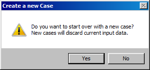
For new cases, the user must supply the following input:
- First year in Projection
- Last year in Projection
- First Age Class (Age 1 by default)
- Last Age Class
- Number Of Fleets (1 by Default)
- Number Of Recruitment Models (1 by Default)
- Number Of Population Simulations
- Random Number Seed
- Discards are Present (optional)
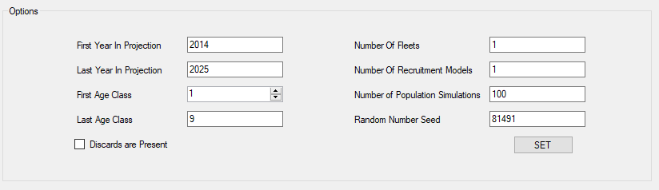
Click SET button to proceed.
Opening an Existing AGEPRO Input Data File
Note: AGEPRO-GUI is only compatible with AGEPRO input files in the AGEPRO VERSION 4.0 and AGEPRO VERSION 4.25 format.
In the File menu, click on the Open Existing AGERPO Input Data File option.
Use the Windows Open File Dialog to locate the desired input file to the interface.
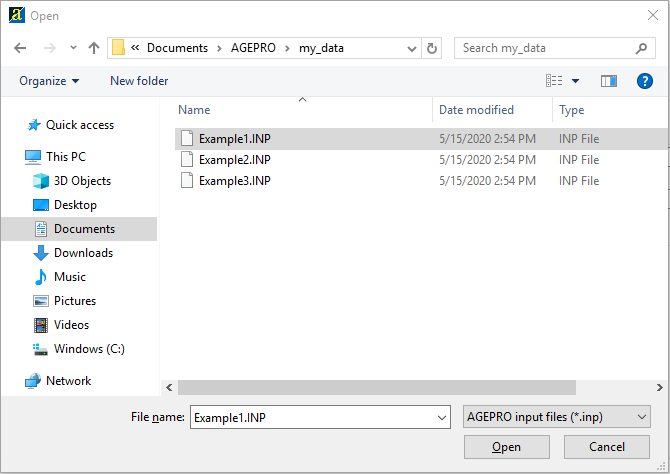
Saving AGEPRO input data into file
To save your inputs, click on the Save AGEPRO Input Data As.. option in the File menu. Save the file as a *.INP file to your desired path as shown below:
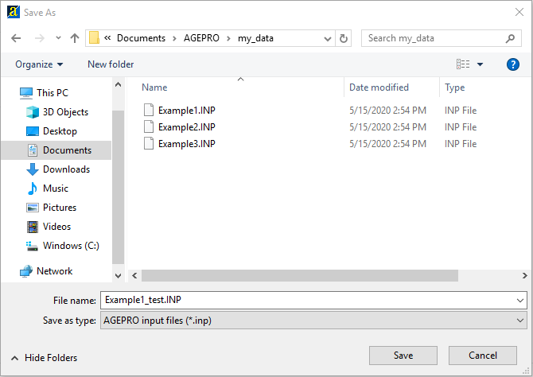
Validation
The program performs a series of data validation steps before it saves to file. If validated, the following dialog will confrim the location the AGEPRO input data file was saved:
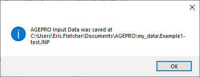
If the validator cathches an error or finds invalid input, it will stop, prevent the input data to be saved, and present the validation error in a dialog box, for example:
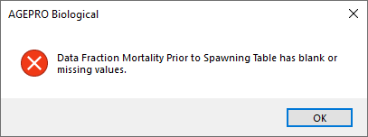
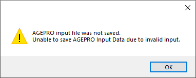
All invalid input has be resolved before the data may be saved.
Launching AGEPRO Model to the Calculation Engine
To run an AGEPRO model in the calcuation engine, a bootstrap population data file is required. Supply the file with Bootstrap population data on the Bootstrap panel. See the Bootstrap section for more information.
In the Run menu, clicking Launch AGEPRO Model gathers and verifies GUI input and Bootstrap data to pass to the calculation engine to execute.
AGEPRO will check if the GUI inputs are valid. If they are, it will create a new AGEPRO Model Output Run directory. GUI input gets written to file in the AGEPRO Model Output Run directory before the AGEPRO calcuation engine launches.
There are three methods AGEPRO collects the bootstrap filepath: The filepath string from the bootstrap parameter. If that is invalid, then it will assume that the bootsrap file (*.BSN) is in the same directory as the AGEPRO Input File. It that is also invalid, then the program allow the user to explictly locate the bootstrap file via the Open File Dialog. If the user cancels from the open file dialog, this will terminate the launch to the calcuation engine and GUI input will be not be written to the AGEPRO Model Output Run directory.
Output files generated by the calcuation engine run is stored in the AGEPRO Model Output Run directory. After the calcuation engine is done, a new window at this location will pop up. Output files may be displayed on an external program, depending on Output File Viewer options in Misc Options.
AGEPRO Model Output Run Directory
Activating the Launch AGEPRO Model menu option creates a new AGEPRO Model Output Run directory. This directory is written into the AGEPRO directory, located under the user’s HOME or documents directory (documents or My Documents). If the AGEPRO directory doesn’t exist, one will be created.
The AGEPRO Model Output Run directory is entitled two ways:
- The base path name in input file from general options (without file extensions) appended with a date-time stamp when the model was launched.
- If input file in general options is blank, then it will have
untitledand the date-time stamp this model launched.
Using Data Grids
Data grids have many functions that are similar to spreadsheet software programs. However, there are a few differences and limitations. The following topics will describe in detail how to perform common tasks.
Right-clicking on the cell to show the Cut, Copy, Paste and Delete options.
Selecting Cells
To select a single cell: Click the cell, or press one of the Arrow keys to move to the cell.
To select more than one cell: Click the on the cell, and while holding the mouse button drag the pointer to the cell in the range of cells you are interested in.
To select an entire row, click on the row heading.
To select the entire grid, do one of the following:
- Right-Click on the grid and select Select All from the context menu.
- Press CTRL+A.
- Click the top left grid cell.
Edit Cell Contents
You can edit the contents of a cell directly in the cell.
To place the contents of a cell in editing mode:
- Double-click the cell that contains the data that you want to edit. Note that the cursor will be at the end of the cell’s contents.
- Click the cell that contains the data that you want to edit, and then start typing. If the cell contained any data it will be erased when you start typing.
While the cell is still in edit mode, use Esc key to cancel the edit. It will revert to previous value before it was entered.
To commit the edits to the cell:
- Hit the Enter key to commit the changes and move the cell selection one cell below.
- Hit the Up Arrow key to commit the changes and move the cell selection one cell above.
- Hit the Down Arrow key to commit the changes and move to the cell selection one cell below.
- If you are at the last character, hitting the Right Arrow key will commit the edit and move the cell selection one cell to the right.
- If you are at the first character, hit the Left Arrow key will commit the edit and move the cell selection one cell to the left.
Copy Grid Data
Select a cell or range of cells. Either Right-Click on the grid and select Copy from the context menu, or use CTRL+C.
Paste Grid Data
If you want to paste data from a spreadsheet program, select and copy the range of cells within the spreadsheet program. The copied cells will be stored to the clipboard. You can also paste data from a text file. Data in a text file should be tab-delimited, rows are line-delimited.
To select where you want the data to be pasted, do one of the following:
- If you have just one cell of data to paste, click on the cell where you want the data to go.
- If you have more than one cell of data to paste, click on the cell you want to be the topmost and leftmost cell of the pasted data. Pasted data will automatically be filled in to the right of and below the cell you select.
To paste the data, either Right-Click on the grid and select Copy from the context menu, or use CTRL+V.
Cut Grid Data
Select a cell or range of cells. Either Right-Click on the grid and select Cut from the context menu, or use CTRL+X.
The selected cells will be cleared and will be sent to the Windows clipboard.
Delete Grid Data
The Delete function clears all data in the selected cells. Unlike Cut, It does not copy the grid cells to the Windows clipboard.
Select a cell or range of cells. Either Right-Click on the grid and select Delete from the context menu, or use the Delete key.
Fill Data in Grid Cells
Select Fill Blank Cells from the context menu. This will populate any blanks cell from the data grid with “0”.
Stochastic Data Files
AGEPRO allows the user to supply stochastic data at age. In addition, the data at age may also vary through the projection time horizon and vary by fleet where applicable.
The user may create a file with stochastic data at age using R or any statistical tool of choice.
Stochastic data file format layout
In order to create a succesful Stochastic Data File, please follow the following data file layout.
The data categories for which this option applies are:
- JAN-1 Stock Weights
- Mid-Year Stock Weights
- Spawning Stock Weights
- Catch Weights
- Discards Weights
- Natural Mortality
- Fishery Selectivity
- Discard Fraction
The Stochastic data files are ASCII data files with space delimited double precision real data.
For each stochastic observed value, the data consists of a number of space delimited data items on each line of the file. Each line is terminated by newline character (a carriage return or carriage return-line feed combination).
In AGEPRO, the user specifies the number of bootstrap iterations on the Bootstrap panel. The user also specifies the number of simulations on the General Options panel.
The Number of Observed Values is equal to: > Number of Bootstraps x Number of Simulations
Time variance
If the user has specified that the data is not time varying: > Number of Data Lines = Number of Observed Values
Number of Data Columns = Number of Age Classes
However, if the user has specified that the data is time varying, then the data layout is:
Number of Data Lines = Number of Observed Values x Number of Years
Number of Data Columns = Number of Age Classes
Example 1:
Number of Age Classes = 9
Number of Bootstrap Iterations = 1000
Number of Simulations on each Bootstrap iteration = 100
Not Time VariantThe data file for the above input would consist of 100,000 lines of data each with 9 space delimited data values. For each observed value, a single line of data is read in and used in all years in the time horizon.
Example 2:
Number of Age Classes = 9
Number of Bootstrap Iterations = 1000
Number of Simulations on each Bootstrap iteration = 100
Number of Years in Projection Horizon = 10
Time VariantThe data file for the above input would consist of 1,000,000 lines of data each with 9 space delimited data values. For each of 100,000 observed values the data is read in for all 10 years.
Stochastic data file format layout with multi-fleets
The following considerations apply to:
- Catch Weights
- Discard Weights
- Fishery Selectivity
- Discard Fraction
If the user has specified more than one fleet, then the data layout differs only in the number of data columns:
Number of Data Columns = Number of Age Classes x Number of Fleets
On each line the program reads the values at age for the first fleet followed by the values at age for the second fleet, etc.
Specifying Weights at Age
AGEPRO allows users to input stochastic weights at age.
From the navigation panel, expand the Weights if Age node to set the following stochastic weights of age:
- JAN-1
- SSB
- Mid-Year (Mean)
- Catch
- Discard
If Discards are present in General Options was unchecked or disabled, controls from Discard will be disabled.
JAN-1 Stock Weights at Age
On the JAN-1 Weights panel, the user can select a data preference:
- User Specfied Weights of Age
- Read Weights from File
The user may select to input mean weights at age and apply log-normal error on each observed value, or to read in stochastic data from a file.
Furthermore, the user specifies whether the data supplied by either method will be supplied for each year in the time horizon as time varying. Otherwise, the data or to use a single set of weights at age for all years.
Example: Time Varying
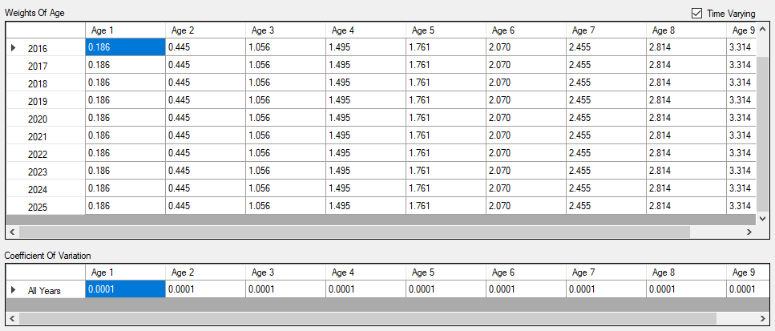
In this first example, Time Varying is enabled. The user supplies mean weights at age for each year in the time horizon. In addition, the user also specifies a coefficient of variation for each age.
Log-Normal error with bias correction will be calculated and applied on each observed value for each year in the time horizon
Example: Non Time Varying
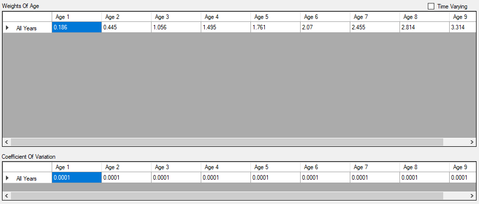
In the next example, Time Varying is not enabled. The user will supply a single vector of mean values for weights at age. The program will apply error on to he data supplied as above, but the data with error will not vary through the time horizon.
Example: From File Option
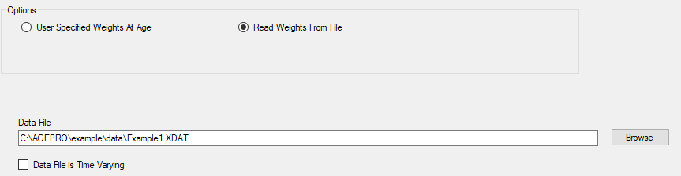
In this example, the user has selected to supply data from an external file with data for each observed value. Use the browse button to bring up a Windows File Dialog from which the user may select the source data file. No further input is required.
Spawning Stock Weights at Age
When SSB is selected from the navigation panel, Spawning Stocks Weights of Age will have these following options:
| Weights at Age Options | Description |
|---|---|
| User Specfied Weights of Age | Input Mean Weights at Age and apply Log-Normal error to the data either time varying or not |
| Read Weights from File | Read the Weights at age with Stochastic error from an external file |
| Use JAN-1 Weights At Age | Use the Jan-1 Stock Weights at Age |
See JAN-1 Stock Weights at Age for more information about User Specfied Weights of Age and Read Weights from File.
Mid-Year Stock Weights at Age
When Mid-Year (Mean) is selected from the navigation panel, Mid-Year Stock Weights at Age will have these following options:
| Weights at Age Option | Description |
|---|---|
| User Specfied Weights of Age | Input Mean Weights at Age and apply Log-Normal error to the data either time varying or not |
| Read Weights from File | Read the Weights at age with Stochastic error from an external file |
| Use JAN-1 Weights At Age | Use the Jan-1 Stock Weights at Age |
| Use SSB Weights At Age | Use the Spawning Stock Weights at Age |
See JAN-1 Stock Weights at Age for more information about User Specfied Weights of Age and Read Weights from File.
Catch Weights at Age
When Catch from is selected from the navigation panel, Catch Weights at Age will have these following options:
| Weights at Age Option | Description |
|---|---|
| User Specfied Weights of Age | Input Mean Weights at Age for each fleet and apply Log-Normal error for each fleet to the data either time varying or not |
| Read Weights from File | Read the Weights at age with Stochastic error from an external file |
| Use JAN-1 Weights At Age | Use the Jan-1 Stock Weights at Age and apply to all fleets |
| Use SSB Weights At Age | Use the Spawning Stock Weights at Age and apply to all fleets |
| Use Mid-Year Weights At Age | Use the Mid-Year Stock Weights at age and apply to all fleets |
See JAN-1 Stock Weights at Age for more information about User Specfied Weights of Age and Read Weights from File.
Discard Weights at Age
If discards were not included with the model case, controls from this weight of age will be disabled.
When Discard is selected from the navigation panel, the user may select from the following:
| Weights at Age Option | Description |
|---|---|
| User Specfied Weights of Age | Input Mean Weights at Age for each fleet and apply Log-Normal error for each fleet to the data either time varying or not |
| Read Weights from File | Read the Weights at age with Stochastic error from an external file |
| Use JAN-1 Weights At Age | Use the Jan-1 Stock Weights at Age and apply to all fleets |
| Use SSB Weights At Age | Use the Spawning Stock Weights at Age and apply to all fleets |
| Use Mid-Year Weights At Age | Use the Mid-Year Stock Weights at age and apply to all fleets |
| Use Catch Weights At Age | Use the Catch Weights at Age for each fleet |
See JAN-1 Stock Weights at Age for more information about User Specfied Weights of Age and Read Weights from File.
Natural Mortality
AGEPRO allows users to input stochastic Natural Mortality.
On the Natural Mortality panel, the user selects from:
- User Specfied Natural Mortality of Age
- Read Natural Mortality from File
Example: Time Varying
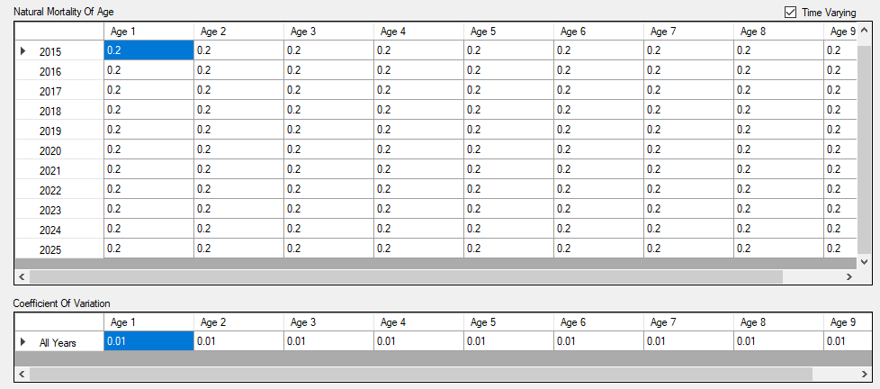
In the above example, Time Varying is enabled. The user has selected to input mean values for natural mortality at age for each year in the time horizon. In addition, the user also supplied the coefficients of variation at each age.
On each observed value the program will apply bias corrected log-normal error to natural mortality at age for each year in the time horizon.
Example: Non Time Varying
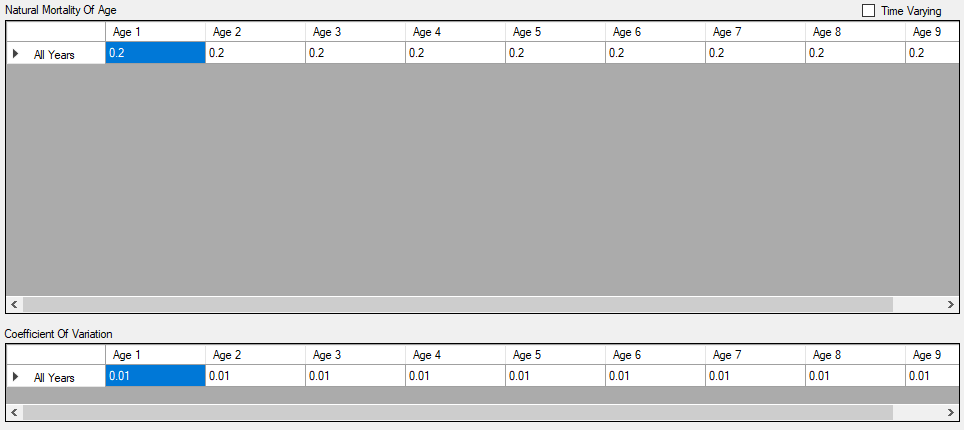
In the above example, Time Varying is not enabled. The user has selected to input a single vector of natural mortality at age. The program will apply bias corrected log-normal error to natural mortality at age but the same values will be constant through the time horizon. In addition, the user has specified a coefficient of variation for each age.
Example: From File Option
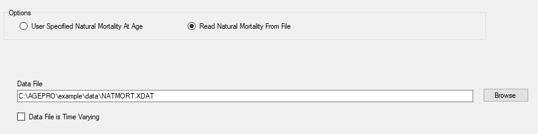
In this example, the user has specified that natural mortality at age with error data will be read from an external file. Use the Browse button to bring up a Windows File Dialog to select the external data file.
Biological
The Biological panel allows the user the following parameters:
Maturity
AGEPRO allows users to input stochastic Maturity at Age.
On the Maturity tab on the Biological panel, the user selects from: * User Specfied Maturity of Age * Read Maturity from File
Example: Time Varying
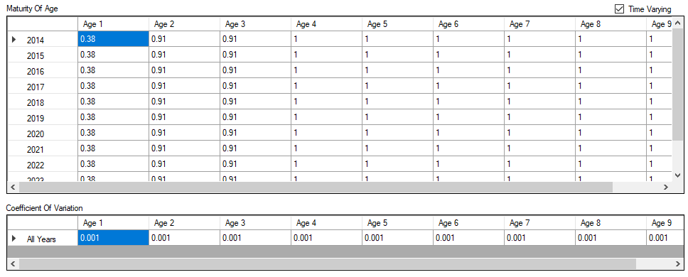
In the above example, Time Varying is enabled. The user has selected to input mean values for maturity at age for each year in the time horizon. In addition, the user also supplied the coefficients of variation at each age.
On each observed value the program will apply bias corrected log-normal error to natural mortality at age for each year in the time horizon.
Example: Non Time Varying
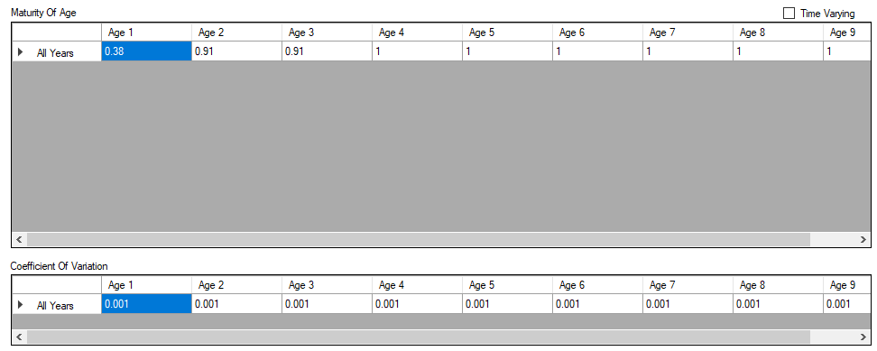
In the above example, Time Varying is not enabled. The user has selected to input a single vector of maturity at age. The program will apply bias corrected log-normal error to maturity at age but the same values will be constant through the time horizon. In addition, the user has specified a coefficient of variation for each age.
Example: From File Option
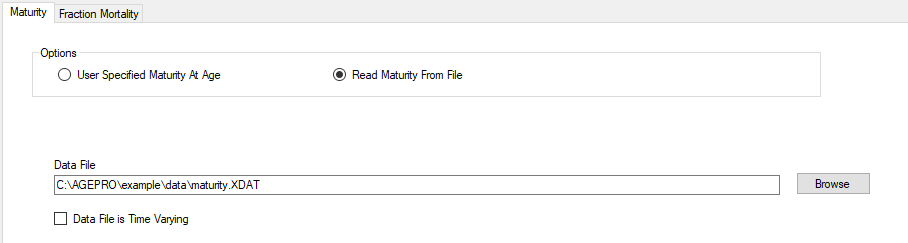
In this example, the user has specified that maturity at age with error data will be read from an external file. Use the Browse button to bring up a Windows File Dialog to select the external data file.
Fraction Mortality Prior to Spawning
On the Fraction Mortality tab in the Biological panel, the user will input the fraction of mortality prior to spawning to be applied independently to Natural and Fishing Mortality.
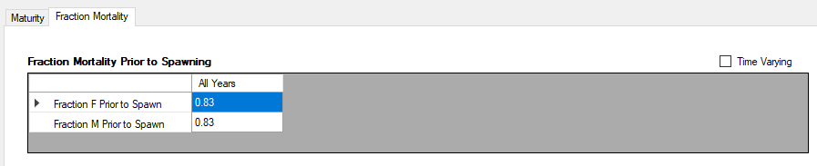
In the above example, the user applies the same constant value to all years in the projection horizon.

In the above example, time varying is enabled, and the user has selected to input different values through the time horizon.
Fishery Selectivity
AGEPRO allows users to input stochastic Fishery Selectivity at Age.
On the Fishery Selectivity panel, the user may select:
- User Specfied Fishery Selectivity of Age
- Read Fishery Selectivity from File
Example: Time Varying
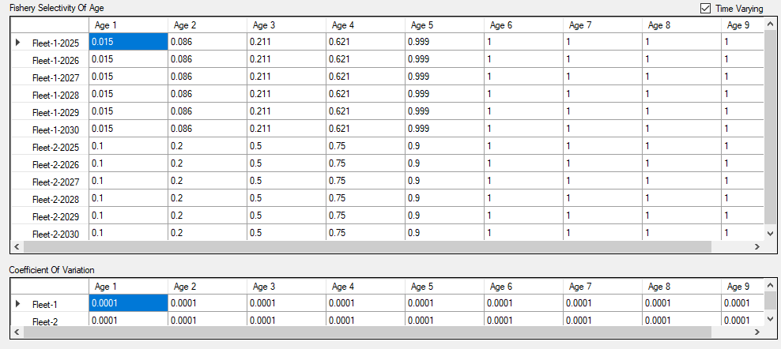
In the above example, time varying is eanbled, and the user has selected to input the mean fishery selectivity for each fleet at age over the entire time horizon. Additionally the user must supply a coefficient of variation for each age and fleet.
On each observed value, the program will apply bias corrected log-normal error to the mean fishery selectivity values at age for all fleets.
Example: Non Time Varying
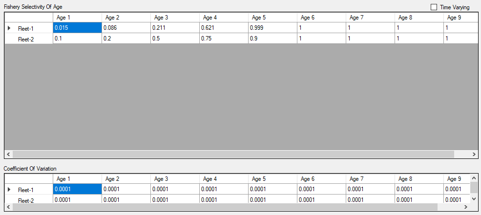
In the above case, the user has selected to input a vector of mean fishery selectivity values at age for each fleet. Additionally, the user must supply a coefficient of variation for each age and fleet.
On each observed value, the program will generate stochastic fishery selectivity values for each fleet. The same values will be applied in all years of the time horizon.
Example: From File Option

In this example, the user specified that stochastic data for fishery selectivity will be read from an external file. Use the Browse button to bring up a Windows File Dialog to select the external data file.
Discard Fraction
AGEPRO allows users to input stochastic Discard Fraction
If a model case didn’t include a discard option (Discards are present in General Options), controls from this stochastic parameter will be disabled.
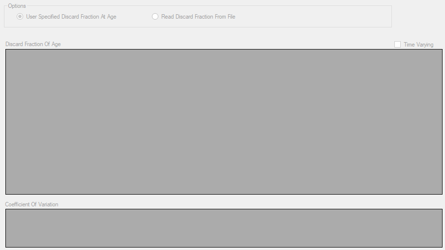
On the Discard Fraction panel the user can select:
- User Specfied Discard Fraction at Age
- Read Discard Fraction from File
Example: Time Varying
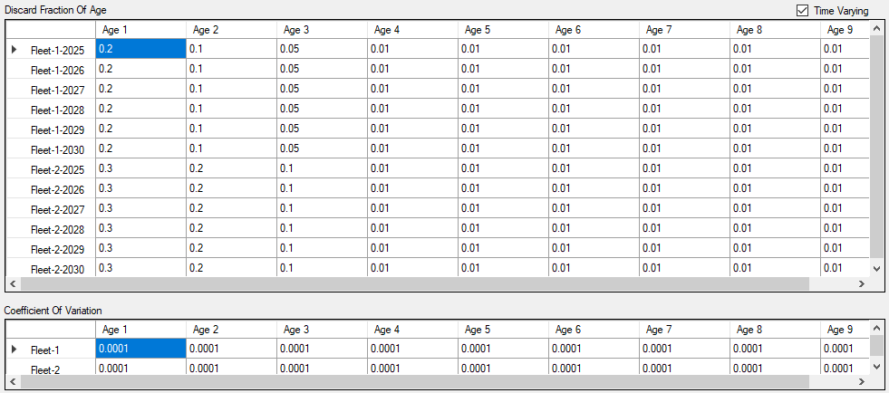
In the above example, time varying is eanbled, and the user has selected to input the mean discard fraction for each fleet at age over the entire time horizon. Additionally the user must supply a coefficient of variation for each age and fleet.
On each observed value, the program will apply bias corrected log-normal error to the mean discard fraction values at age for all fleets.
Example: Non Time Varying
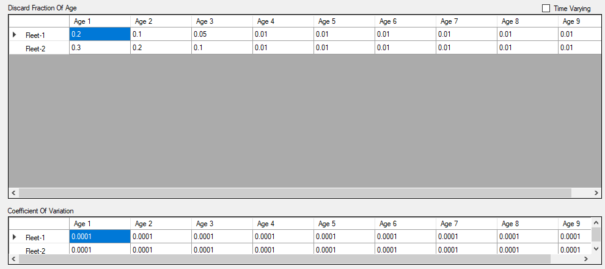
In the above case, the user has selected to input a vector of mean discard fraction at age for each fleet. Additionally, the user must supply a coefficient of variation for each age and fleet.
On each observed value, the program will generate stochastic discard fraction values for each fleet. The same values will be applied in all years of the time horizon.
Example: From File Option
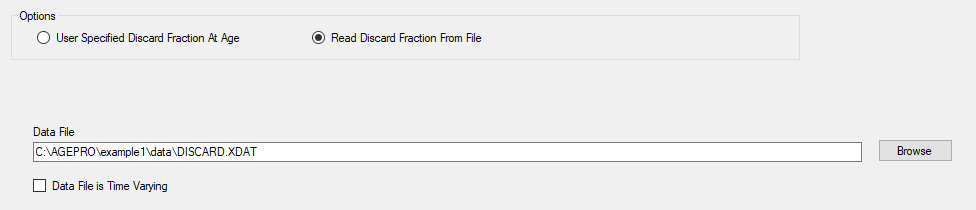
In this example, the user specified that stochastic data for discard fraction will be read from an external file. Use the Browse button to bring up a Windows File Dialog to select the external data file.
Bootstrap
Bootstrapping input and options is located on the Bootstrapping panel.
The user must input the Number of Bootstrap iterations. Each line in the Bootstrap file represents a bootstrap iteration, consisting of space delimited stock values at age as double precision numeric values. The number of data values on each row line must be equal to the number of age classes.
The number of rows in the bootstrap file must be at least equal to the number of bootstrap iterations. Since it contains the population of the first year in the projection.
AGEPRO, will ignore additional iterations or bootstrap data intended for addtional projection years.
For each bootstrap iteration the stock values at age in the file will be multiplied by the Population Scaling Factor. For example, a population scale factor of 1000 means that a bootstrap file contains stock values at age equal to thousands of fish.
The AGEPRO Calculation Engine does not support recruitment ages beyond age 1. If you are using earlier versions of AGEPRO Calcuation Engine prior to Version 3.4, use a second bootstrap file with Bootstrap F’s.
Scaling factors with VPA(Virtual Population Analysis)
Typically, bootstrap files are generated by the VPA(Virtual Population Analysis) or ASAP(Age Structured Assessment Program) Models. It is imperative that the user be consistent between VPA or ASAP runs and AGEPRO.
In the following example, the VPA program input generates a bootstrap population file which uses a scaling factor of 1. Thus, if this were the VPA file used to create for AGEPRO input, with AGEPRO’s Population Scaling Factor of 1000, then it will imply that the VPA Catch data was in thousands of fish.

Recruitment
AGEPRO supports multiple recruitment methods. The number of recruitment methods can be specified in the General Options panel.
Under Select Recruitment Models is a DataGrid object with combo box(es). The number of recruitment methods determines the number of combobox selections.
The combobox will be populated with the following models:
- Model 1: Markov Matrix
- Model 2: Empirical Recruits per Spawning Biomass Distribution
- Model 3: Empirical Recruitment Distribution
- Model 4: Two-Stage Empirical Recruits per Spawning Biomass Distribution
- Model 5: Beverton-Holt Curve w/ Lognormal Error
- Model 6: Ricker Curve w/ Lognormal Error
- Model 7: Shepherd Curve w/ Lognormal Error
- Model 8: Lognormal Distribution
- Model 10: Beverton-Holt Curve w/ Autocorrected Lognormal Error
- Model 11: Ricker Curve w/ Autocorrected Lognormal Error
- Model 12: Shepherd Curve w/ Autocorrected Lognormal Error
- Model 13: Autocorrected Lognormal Distribution
- Model 14: Empirical Cumulative Distribution Function of Recruitment
- Model 15: Two-Stage Empirical Cumulative Distribution Function of Recruitment
- Model 16: Linear Recruits per Spawning Biomass Predictor w/ Normal Error
- Model 17: Loglinear Recruits per Spawning Biomass Predictor w/ Lognormal Error
- Model 18: Linear Recruitment Predictor w/ Normal Error
- Model 19: Loglinear Recruitment Predictor w/ Lognormal Error
- Model 20: Fixed Recruitment
- Model 21: Empirical Cumulative Distribution Function of Recruitment w/ Linear Decline to Zero
The user can choose multiple instances of a Recruitment Model (example: All 3 Recruitment Models can be a Beverton-Holt Curve Model). However, Only a single instance of the Markov Matrix model is allowed.
Model 9: Time-Varying Empirical Recruitment Distribution is not supported in AGEPRO version 4.0 and later. This model can be reimplemented by specifying multiple instances of Model 3.
Recruitment Probability
Each model selection is given a probability in each year of the projection time horizon. In each realization, and each year in the projection time horizon, a single recruitment method is randomly selected from a multinomial distribution.
For each year (row), the Recruitment Probably selections (columns) must sum up to 1.0.
Specifying Scaling Factors for Recruitment and SSB
Recruitment Scaling Factor and SSB Scaling Factor are explicit scaling factors that is applied to recruitment models. The calculated recruitment from the model will be multiplied by the Recruitment Scaling Factor before it is outputted to the user. The calculated Spawning Stock Biomass will be divided by the SSB Scaling Factor for use within recruitment model calculations.
Recruitment Scaling Factor scales in number of fish (for recruit values in Recruitment Model parameters). SSB Scaling Factor scales in Metric Tons (for SSB/biomass values in Recruitment Model parameters).
Specifying the First Recruitment Age class
The user has the option to select either Age 0 or Age 1 as the first recruitment age class in General options panel. The default is Age 1 recruitment.
For Age 1 Recruitment, the calculated recruitment is introduced into the first Age Class in the subsequent year.
In those methods in which Recruitment is a function of Spawning Stock Biomass, the stock numbers in the first Age class in Year T+1 will be equal to the predicted recruitment based on SSB in Year T.
If Age 0 Recruitment is selected, the calculated recruitment is introduced into the first Age Class in the current year for all years except the first year in the time horizon.
For those recruitment methods in which Recruitment is a function of Spawning Stock Biomass, the stock numbers for Age 0 in Year T will be equal to The predicted recruitment based on SSB in the same Year. This rule applies to all years except the first year in the time horizon.
AGEPRO does not support first recruitment ages classes beyond 1.
Empirical Recruitment Models
When an Empirical Recruitment model type is selected in the the recruitment selection drop down list in the Recruit Model tab of the Recruitment panel, input parameters for this type of recruitment will appear below.
Empirical Recruitment Models include:
- Model 2. Empirical Recruits Per Spawning Biomass Distribution
- Model 3. Empirical Recruitment Distribution
- Model 4. Two-Stage Empirical Recruits Per Spawning Biomass Distribution
- Model 14. Empirical Cumulative Distribution Function of Recruitment
- Model 15. Two-Stage Empirical Cumulative Distribution Function of Recruitment
- Model 20. Fixed Recruitment
- Model 21. Empirical Cumulative Distribution Function of Recruitment with Linear Decline to Zero
Multiple instances of the same empirical model are allowed. Use the recruitment selection drop down list to toggle between input sets in the Recruit Model tab in the Recruitment panel.
Only numeric data is allowed for Empirical Recruitment models..
Note: The Recruitment Scale Factor in the Recruitment tab should be consistent with empirical observations entered. For example, if the data shown above are empirical observations in millions of fish then the Recruitment Scale Factor must be input as 1,000,000
Enter a new value for the number of observations and click on the SET button to resize the observation tables.
Fixed Recruitment Method
In the datagrid, the user inputs fixed recruitment values for the projection time horizon beginning with the 2nd Year. Recruitment in the 1st year of the projection time horizon is the value supplied in the bootstrap file for the first age class.
Parametric Recruitment Models
When a Parametric Recruitment model type is selected in the the recruitment selection drop down list in the Recruit Model tab of the Recruitment panel, input parameters for this type of recruitment will appear below.
Parametric Recruitment Models Include:
- Model 5. Beverton-Holt Curve With Lognormal Error
- Model 6. Ricker Curve With Lognormal Error
- Model 7. Shepherd Curve With Lognormal Error
- Model 8. Lognormal Distribution
- Model 10. Beverton-Holt Curve With Autocorrelated Lognormal Error
- Model 11. Ricker Curve With Autocorrelated Lognormal Error
- Model 12. Shepherd Curve With Autocorrelated Lognormal Error
- Model 13. Autocorrelated Lognormal Distribution
Multiple instances of the same parametric model are allowed. This would allow the user to, for example, set up multiple Beverton Holt models with different parameters. Use the recruitment selection drop down list to toggle between input sets.
Note: Make sure that the scaling of the parametric parameters is consistent with the SSB and Recruitment Scaling Factors on the Recruitment tab.
Predictor Recruitment Models
When a predictor recruitment model type is selected in the the recruitment selection drop down list in the Recruit Model tab of the Recruitment panel, input parameters for this type of recruitment will appear below.
The Predictor Models Include:
- Model 16. Linear Recruits per Spawning Biomass Predictor with Normal Error
- Model 17. Loglinear Recruits per Spawning Biomass Predictor with Lognormal Error
- Model 18. Linear Recruitment Predictor with Normal Error
- Model 19. Loglinear Recruitment Predictor with Lognormal Error
Multiple Instances of the same predictor model are allowed. Use the recruitment selection drop down list to toggle between input sets.
To change the number of predictors, set the value of the number of recruitment predictors parameter by typing the value in or using spinbox arrows, and then click on the SET button. The valid number of predictors range from 0-5.
Markov Matrix Recruitment
When Model 1: Markov Matrix is selected in the the recruitment selection drop down list in the Recruit Model tab of the Recruitment panel, input parameters for this type of recruitment will appear below. Only one instance of Markov Matrix recruitment is allowed.
Use the SET button to change the number of levels.
Note: The probabilities of each SSB level row in the Probability table must sum up to 1.0
Note: Make sure that the scaling of Recruitment and SSB cutpoint inputs is consistent with the SSB and Recruitment Scaling Factors on the Recruitment tab.
Harvest Scenario
The Harvest Scenario panel includes a data grid used to determine the level of population harvest for each year in the projection horizon.
In addition, the user may use this data grid for additional harvest calculations such as the P-Star Analysis, or Stock Rebuilder Target. By default, None (only Harvest Scenario) is selected.
Harvest Scenario Table
In the Harvest Scenario data grid table, the user must specify the Harvest Specfication for each year in the projection time horizon. The choices are: * Landings (MT) * Removals (Landings and Discards) (MT) * Total Fishing Mortality or “F-MULT”
For single fleet models, apply the Harvrest Specfication values under the HARVEST VALUE column. For multiple fleet models, input the values for the intended fleet (e.g. F-MULT specfic values for FLEET-2). In either case, harvest specification values must be numeric.
Rebuilder Target Option
AGEPRO allows an option for the user to specify a Rebuilder target and calculate the Fishing Mortality level required to meet this target to a specified confidence level.
Select the Apply Rebuilder Target option for Additional calculations box in the Harvest Scenario panel. Rebuilder Specification will appear directly below.
For the Harvest Scenario Table, the Harvest Specification from the second year (row 2) in the time horizon to the Rebuild Target Year must be set to F-MULT
For Rebuilder Target Type, the user may set the rebuilder target as:
- Spawning Stock Biomass
- Jan-1 Biomass
- Mean Biomass
If there is more than one fleet then the input estimates will be used to set the proportion of Fishing Mortality in each fleet. This proportion will be held constant as the F-Mult level changes to meet the target.
Example
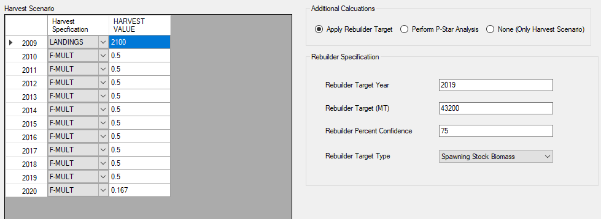
In the example shown above the user has set a Landings Harvest Quota in the first year of 2,100 MT.
The Rebuilder range begins with the second year in the time horizon and ends at the target year 2019.
The user has also set the Harvest F-Mult in the Rebuilder Range at an initial guess.
The program will vary the F-MULT level in the Rebuilder range until the Rebuilder Specification in the Target Year is met to the confidence level requested. In this case the user has specified that the Spawning Stock Biomass in 2019 will be at least 43,200 MT with a probability of 75%.
Total Fishing Mortality
Year Average StdDev
2009 0.0862 0.0154
2010 0.1656 0.0000
2011 0.1656 0.0000
2012 0.1656 0.0000
2013 0.1656 0.0000
2014 0.1656 0.0000
2015 0.1656 0.0000
2016 0.1656 0.0000
2017 0.1656 0.0000
2018 0.1656 0.0000
2019 0.1656 0.0000
2020 0.1670 0.0000The program has set the F-Mult in all years of the rebuilder range to 0.1656
By using a Reference Point Threshold, the user may validate that the target was met (year 2019) to the confidence level requested:
Probability Spawning Stock Biomass Exceeds Threshold 43.200 (1000 MT)
Year Probability
2009 0.024250
2010 0.069990
2011 0.159530
2012 0.303640
2013 0.409640
2014 0.521230
2015 0.612170
2016 0.668130
2017 0.705300
2018 0.731610
2019 0.749960
2020 0.761440
Probability Threshold Exceeded at Least Once = 0.9063P-Star Analysis
P-Star Analysis determines P-Star (risk of overfishing) at multiple levels.
Select the Peform P-Star Analysis option for Additional calculations box in the Harvest Scenario panel. This will show the P-Star Specfication directly below. The P-Star Specification allows the user to specify the number and values of P-Star levels, Overfishing F criteria, and P-Star Target Year. P-Star levels in should be entered in ascending order.
For the Harvest Scenario Table, the user must set the column Harvest Specification to REMOVALS (landings and discards) on the year (row) that P-Star Target Year is set to.
For the multiple fleets scenario, the proportion of removals per fleet will be set by the initial guess and this proportion will be held constant as total removal values are varied to meet the P-Star criteria.
Example
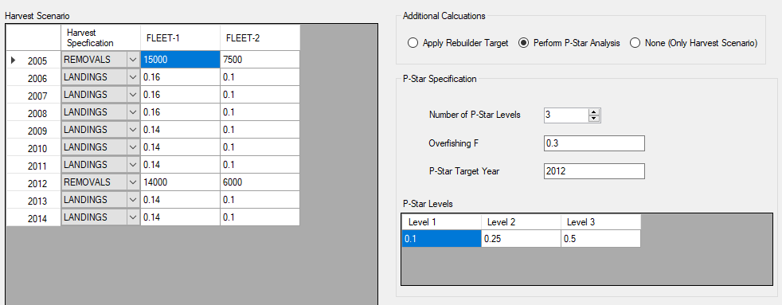
In the above example, the user has provided an initial guess of total removals of 20,000 MT (15000 for Fleet-1 + 7500 for Fleet-2). The user has also specified that 70% of the removals are in Fleet-1 and 30 % in Fleet-2.
The Overfishing F is 0.3. The program will vary the levels of total removals to determine the level of removals required to exceed a Total F of 0.3 with 10%, 25%, and 50% levels of confidence.
A table of results is reported for all levels
PStar Summary Report
Overfishing F = 0.3000 Target Year = 2012
PStar TAC
0.1000 18762
0.2500 26874
0.5000 40340The highest P-Star level is used in the final output report.
The highest P-Star level is a combined catch equal to 40,340 MT
Probability Total Fishing Mortality Exceeds Threshold 0.3000
Year Probability
2005 0.443400
2006 0.000000
2007 0.000000
2008 0.000000
2009 0.000000
2010 0.000000
2011 0.000000
2012 0.500000
2013 0.000000
2014 0.000000
Probability Threshold Exceeded at Least Once = 0.7015Combined Catch Biomass x 1000 MT
Year Average StdDev
2005 23.8159 0.5280
2006 58.2893 33.4187
2007 90.0363 66.6863
2008 83.3679 56.3227
2009 69.4739 38.4229
2010 57.6585 31.6780
2011 49.4235 26.5478
2012 40.3302 0.4501
2013 37.9428 21.5088
2014 18.6135 15.1005Combined Catch Distribution
| Year | 1 % | 5 % | 10 % | 25 % | 50 % | 75 % | 90 % | 95 % | 99 % |
|---|---|---|---|---|---|---|---|---|---|
| 2005 | 23.0242 | 23.1791 | 23.2748 | 23.4553 | 23.7168 | 24.0544 | 24.4621 | 24.7863 | 25.6062 |
| 2006 | 20.5261 | 25.7774 | 29.6497 | 38.0500 | 50.1961 | 68.2416 | 92.9632 | 115.6090 | 189.9173 |
| 2007 | 24.7738 | 32.7074 | 38.7986 | 51.2893 | 71.8312 | 104.0114 | 160.1893 | 209.6707 | 356.1510 |
| 2008 | 24.5674 | 32.3727 | 38.1408 | 49.9449 | 68.0199 | 96.3123 | 145.6537 | 188.8369 | 303.7527 |
| 2009 | 23.2500 | 30.2112 | 35.0125 | 45.1508 | 60.0323 | 81.9444 | 112.9818 | 140.4948 | 217.4582 |
| 2010 | 19.9632 | 25.9880 | 29.9054 | 37.6155 | 49.3528 | 67.7771 | 95.3417 | 118.0018 | 174.5042 |
| 2011 | 18.4318 | 23.2325 | 26.2634 | 32.7304 | 42.4053 | 57.6223 | 80.5782 | 98.1937 | 152.4862 |
| 2012 | 40.3401 | 40.3401 | 40.3401 | 40.3401 | 40.3401 | 40.3401 | 40.3401 | 40.3401 | 40.3401 |
| 2013 | 10.0895 | 15.3514 | 18.2694 | 24.3797 | 32.6471 | 45.5232 | 63.8322 | 78.3229 | 113.7047 |
| 2014 | 2.9045 | 4.6582 | 6.0500 | 9.2075 | 14.5876 | 23.0587 | 35.2707 | 45.9843 | 75.4379 |
Misc options
Auxiliary Output Files
AGEPRO includes a set of enhanced auxiliary output files. These files will be saved in their desginagted AGEPRO Model Output Run directory.
The Auxiliary files follow the naming conventions that are used to make the AGEPRO Model Output Run directory, but have different file extensions.
All auxiliary file data items are space delimited double precision real numbers in scientific notation.
In the following auxiliary files the number of columns is equal to the number of years in the time horizon and the number of rows is equal to the number of observed values. These files are created in all cases.
The number of observed values is equal to the number of bootstrap iterations multiplied by the number of simulations.
The units used in the auxiliary files are not affected by the summary report scaling factors optionally applied to the report file.
| File Extension | Model Items |
|---|---|
| XX1 | Stock Numbers of Age (If Output Summary Report for Stock Numbers at Age is enabled) |
| XX2 | Recruits (Fish) |
| XX3 | Spawning Stock Biomass (MT) |
| XX4 | Jan-1 Biomass (MT) |
| XX5 | Mean Biomass (MT) |
| XX6 | Catch Biomass (Landings + Discards) (MT) |
| XX7 | Landings (MT) |
| XX8 | Discards (MT) |
| XX9 | F-Mult |
If the option Output Summary Report for Stock Numbers at Age is enabled, auxiliary file XX1 will be created. This file has stock numbers at age. The file has a number of columns equal to the number of age classes and a number of rows equal to the number of years in the time horizon multiplied by the number of observed values.
Please Note: The size of the Stock Numbers at Age auxiliary file may be quite large if the numbers at age, number of years in the time horizon, or the number of observed values is large.
Multi-Fleet Auxiliary Data File (*.XX10)
If there is more than one Fleet then an additional auxiliary file with file extension XX10 will be created. The number of columns will be equal to the number of years in the time horizon.
The number of data sections will be equal to the number of observed values multiplied by the number of fleets.
There are four rows in each section by fleet: * Fishing Mortality * Combined Catch Biomass * Landings * Discards
Generating Auxiliary Stochastic Data Files
The user may request that stochastic data at age be saved to auxiliary files on the Options tab.
These stochasitic data files may be read in to subsequent model runs
| File Extension | Data Items |
|---|---|
| XXX1 | Stock Weights |
| XXX2 | Spawning Stock Weights |
| XXX3 | Mid-Year Weights |
| XXX4 | Catch Weight |
| XXX5 | Discard Weights |
| XXX6 | Natural Mortality |
| XXX7 | Maturity |
| XXX8 | Fishery Selectivity |
| XXX9 | Discard Fraction |
Summary Report of Stock Numbers of Age
To request an summry report, check the option Ouput Summary Report for Stock Numbers at Age. When enabled, the program will generate a table of stock number distribution at age for each year in the time horizon.
Generating a summary report with a large time horizon and/or large number of age classes is not recommended, since it can affect completeion of the AGEPRO model run.
Export to R
If Export Results to R is enabled, a file will be created in the same directory as the input file, with a name based on the name of the input file except with an .RDAT extension. The data in the file is stored in the the R “ddump” format, which is an ASCII representation of an R object.
Data in this format can be read into R using a single “dget” command. In R, you would type something like:
x = dget('myfile.rdat')Where myfile.rdat is the name of the file created during the export process.
Specifying a Specfic Percentile in Output Report
The Summary Report provides tables of the distribution of calculated results at standard distribution intervals including the median. However, a summary report with a specfic percentile that is not equal to the standard distribution internal can be requested.
To create the Percentile Report in the Output File, check the Reqest Percentile Report checkbox option in Output Options Section in the Misc. Options panel. Then, enter a percentile value between 0.0 and 100.0 in the Report Percentile spinbox.
The summary report scaling units are the same as were are used in the output report with a standard distribution.
Example
The Output Report will supply values for each year in the time horizon for the calculated results:
Requested Percentile Report
Percentile = 60.00 %
2005 2006 2007 2008 2009 2010 2011 2012 2013 2014
Recruits 61.4121 61.5496 61.4263 61.5560 61.7028 61.5476 61.6189 61.5289 61.6729 61.7721
Spawning Stock Biomass 107.2980 659.3243 683.8850 591.5898 502.6594 444.8396 393.4123 354.1344 314.3024 289.2476
Jan-1 Stock Biomass 438.4464 727.1282 790.1585 703.2796 598.7040 535.7083 478.7315 432.9380 387.1672 360.1825
Mean Biomass 387.3808 634.6203 663.1946 573.3694 493.5514 441.9435 396.9153 359.6175 322.4296 300.5405
Combined Catch Biomass 23.0890 54.3665 114.6540 134.2215 101.8851 89.4593 76.8770 67.2651 58.7692 53.3587
Landings 22.5330 52.7181 113.5268 132.7871 100.7810 88.4612 75.9868 66.4783 58.0849 52.7141
Discards 0.5560 1.6155 1.1014 1.3975 1.0788 0.9637 0.8638 0.7737 0.6854 0.6333
FMort 0.1869 0.2600 0.2600 0.2600 0.2400 0.2400 0.2400 0.2400 0.2400 0.2400
Stock Numbers at Age
Age 1 12.3924 61.4121 61.5496 61.4263 61.5560 61.7028 61.5476 61.6189 61.5289 61.6729
Age 2 723.4452 10.1231 50.1152 50.2031 50.1283 50.2243 50.3180 50.1996 50.2535 50.2007
Age 3 0.9338 582.7218 8.1089 40.1317 40.2213 40.2209 40.2942 40.3655 40.2727 40.3275
Age 4 3.0425 0.7365 451.5521 6.2816 31.1053 31.3186 31.3142 31.3677 31.4161 31.3529
Age 5 37.3769 2.2338 0.5131 314.5587 4.3710 21.9489 22.0933 22.0963 22.1299 22.1605
Age 6 6.0544 25.7380 1.4098 0.3240 198.6922 2.8168 14.1379 14.2306 14.2335 14.2576
Age 7 7.7116 4.1326 16.2468 0.8896 0.2044 127.9874 1.8151 9.1085 9.1620 9.1677
Age 8 1.2546 5.2943 2.6091 10.2540 0.5615 0.1316 82.4348 1.1680 5.8667 5.9029
Age 9 4.4207 3.8955 5.7163 5.2276 9.6713 6.5808 4.3209 55.6507 36.6454 28.0549 Reference Point Threshold Report
To request a Reference Point Threshold Report, check the Enable Reference Point Theshold Report check box. Then, input the Threshold values desired.
Biomass threshold values are in Metric Tons (MT). If a reference point has a value of zero (0), then that portion of the report will be skipped.
The Program will Output a table by year of the probability that the requested threshold will be exceeded.
Example
In this example, the user entered the values for Spawning Stock Biomass as 250300 and for Fishing Mortality as 0.26.
JAN-1 Stock Biomass and Mean Biomass has value 0, therefore skipped in the threshold report.
Probability Spawning Stock Biomass Exceeds Threshold 250.300 (1000 MT)
Year Probability
2005 0.000000
2006 0.991000
2007 0.991500
2008 0.980000
2009 0.962900
2010 0.940200
2011 0.901200
2012 0.842400
2013 0.721400
2014 0.616900
Probability Threshold Exceeded at Least Once = 0.9966Probability Total Fishing Mortality Exceeds Threshold 0.2600
Year Probability
2005 0.006500
2006 0.000000
2007 0.000000
2008 0.000000
2009 0.000000
2010 0.000000
2011 0.000000
2012 0.000000
2013 0.000000
2014 0.000000
Probability Threshold Exceeded at Least Once = 0.0065Scaling Option in Output Report
AGEPRO by default will scale the calculated results for the Summary Report as follows:
| Data Type | Default Report Units |
|---|---|
| Biomass | Metric Tons x 1000 |
| Recruitment | Recruitment Scale Factor |
| Stock Numbers | Bootstrap’s Population Scale Factor |
However, the user may find that these defaults make the data hard to read in the report file. The user may override these defaults by checking the Specify Scale Factors for Output Report check box.
Please Note: This scaling is only used in the Report File and in Plots within the graphical interface, and does not affect the internal calculations or the auxiliary files.
Specifying Bounds
The user has an option to override the default maximum bounds values for Weights of Age (default: 10.0) and Natural Mortality (default: 1.0). This is be enabled by checking the Specify Bounds check box.
Retrospective Adjustment Factors
Retrospective Adjustment Factors are applied to the initial population numbers to correct for retrospective bias. This is an optional parameter, and the user can enable or disable it by checking/unchecking the Specify Retrospective Adjustment Factors check box.
The stock numbers in the first year of the projection is read from the Bootstrap File on each bootstrap iteration will be multiplied by the retrospective adjustment factors.
View AGEPRO Output files
Choose which program to view AGEPRO Output Data (*.out) files. This program will open once the AGEPRO calculation engine is finished.
If System Default is selected, it will launch a program that AGEPRO Output data files was assoicated to on that system. If that hasn’t been estabished, then a dialog window will pop up similar to the following.

To bypass viewing AGEPRO Output data files after a model run, select None.
AGEPRO Projection Samples
The following descriptions for the first three examples are excerpt from the AGEPRO Reference Manual (Brodziak 2018). Example 4 references Stock Assessment of Uku (Aprion virescens) in Hawaii, 2020 (Nadon et al. 2020). These examples are provided to illustrate projection options and features of AGEPRO. These projections use actual fishery data but are for the purposes for demostration only.
Example 1
The first example is a fishing mortality and landings quota projection for Acadian redfish. The time horizon is 2004-2009. The fishery is comprised of two fleets that have identical fishing mortality rates in 2004, identical quotas in 2005, and fishing mortality rates that differ by 2-fold during 2006-2009. This is standard projection analysis with 1000 bootstraps and 100 simulations per bootstrap based on an ADAPT/VPA stock assessment analysis. The model also outputs an R dataframe.
Example 2
The second example is a fishing mortality and landings quota projection for Gulf of Maine haddock with a PStar analysis in 2018. The time horizon is 2014-2020. The fishery is comprised of one fleet. This is PStar projection analysis with 1000 bootstraps and 10 simulations per bootstrap based on an ASAP stock assessment analysis.The model output shows that total allowable catch amounts in 2018 to produce probabilities of overfishing of 10%, 20%, 30%, 40% and 50% at the overfishing level of F=0.35. The total allowable catches to produce overfishing probabilities of 10%, 20%, 30%, 40% and 50% are calculated to be 1780, 1998, 2176, 2332, and 2497 mt, respectively. The model output includes a stock summary of numbers at age and also outputs a percentile analysis for key outputs at the 90th percentile.
Example 3
The third example is a fishing mortality and landings quota projection for Gulf of Maine haddock with a rebuilding analysis for 2014-2020. The fishery is comprised of one fleet with process error in fishery selectivity. This is rebuilding projection with 1000 bootstraps and 10 simulations per bootstrap based on an ASAP stock assessment analysis. The model output shows the constant fishing mortality to rebuild the stock is F(REBUILD)=0.045. The model output includes a stock summary of numbers at age and also outputs a percentile analysis for key outputs at the 90th percentile.
Example 4
The fourth example is a fishing mortality and stock biomass projection for the uku snapper in Hawaii. The projection was conducted using results from the base-case Stock Synthesis model to evaluate the probable impacts of constant catch quotas on future spawning stock biomass and yield with a time horizon of 2019-2026. This projection includes four fishing fleets with distinct landings quotas, mean weights at age, and fishery selectivities at age as well as using three recruitment models with different probabilities of being the future state of nature. The initial condition for the stochastic projection was based on the distribution of estimated initial population size-at-age in the year 2018. A total of 1000 simulations were run for each of 100 bootstrap replicates to characterize the effects of uncertainty in initial stock size as well as process errors on the distribution of future recruitment, life history, and fishery parameters.